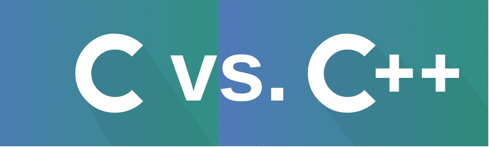

Introduction
C is a general-purpose, procedural computer programming language supporting structured programming, lexical variable scope, and recursion, with a static type system. By design, C provides constructs that map efficiently to typical machine instructions.

C vs C++
The Core Differences Between C and C++
C is a classic low-level procedural programming language while C++ is a superset of C that is both procedural and object-oriented. Both C and C++ are commonly used languages and though C++ is derived of C both languages need to be approached differently.
Variables
A variable is nothing but a name given to a storage area that our programs can manipulate.
Each variable in C has a specific type, which determines the size and layout of the variable's memory; the range of values that can be stored within that memory; and the set of operations that can be applied to the variable.
Below is an exmaple of a C variable:
int x = 10;
The above code fragment declares an integer variable in the memory and stores the value 10 in it.
Declaring Variables
A variable definition tells the compiler where and how much storage to create for the variable.
A variable definition specifies a data type and contains a list of one or more variables of that type as follows −
type variable_list;
A variable declaration provides assurance to the compiler that there exists a variable with the given type and name so that the compiler can proceed for further compilation without requiring the complete detail about the variable. A variable definition has its meaning at the time of compilation only, the compiler needs actual variable definition at the time of linking the program.
The below code fragment declares and initializes three variables:
/* variable definition: */
int a, b;
int c;
float f;
/* actual initialization */
a = 10;
b = 20;
Variable Names
In C, there are some rules to be followed while naming your variables. They are as follows:
- Characters Allowed :
- Underscore(_)
- Capital Letters ( A – Z )
- Small Letters ( a – z )
- Digits ( 0 – 9 )
- Blanks & Commas are not allowed
- No Special Symbols other than underscore(_) are allowed
- First Character should be alphabet or Underscore
- Variable name Should not be Reserved Word
Here are some examples of valid variable names:
num
Num
Num1
_NUM
NUM_temp2
Now, here are some examples of invalid variable names:
int //This is a reserved word
float //This is a reserved word
continue //This is a reserved word
break //This is a reserved word
1num
1_num
365_days
number 1
num 1
addition of program
In C, variable names are also case-sensitive
Data Types
Data types specify how we enter data into our programs and what type of data we enter. C language has some predefined set of data types to handle various kinds of data that we can use in our program. These datatypes have different storage capacities.
Data type determines the type of data a variable will hold. If a variable x is declared as int. it means x can hold only integer values. Every variable which is used in the program must be declared as what data-type it is.
- char: The most basic data type in C. It stores a single character and requires a single byte of memory in almost all compilers.
- int: As the name suggests, an int variable is used to store an integer.
- float: It is used to store decimal numbers (numbers with floating point value) with single precision.
- double: It is used to store decimal numbers (numbers with floating point value) with double precision.